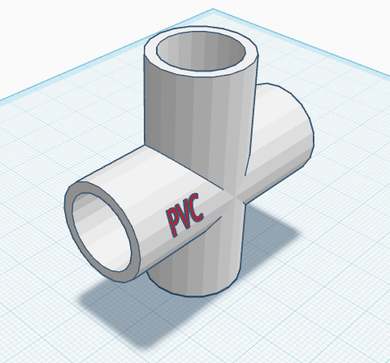
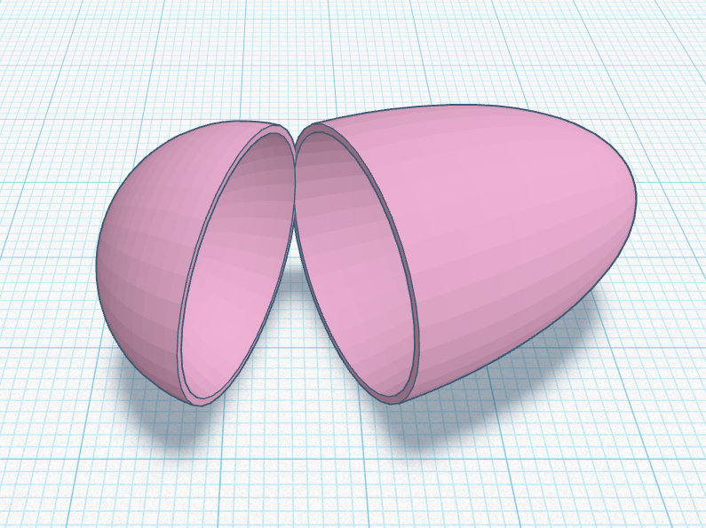
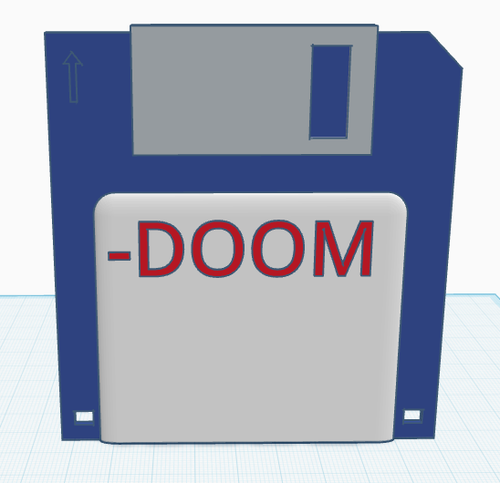
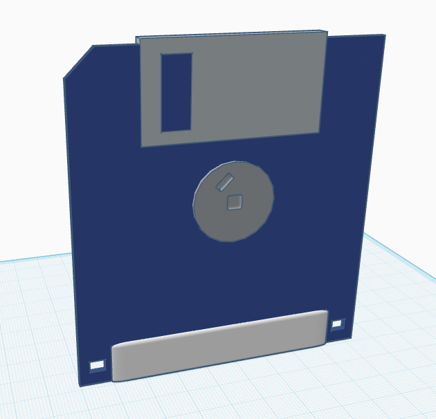
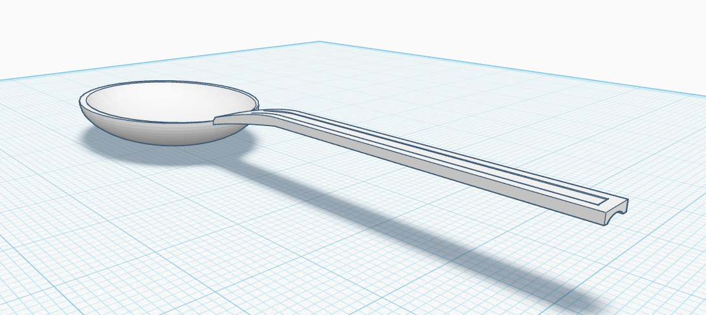
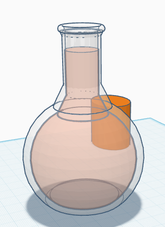
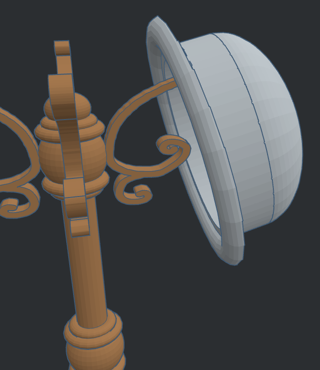
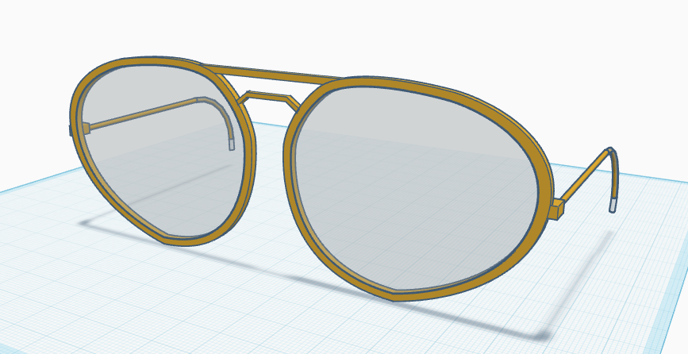

This was the first model we made in TinkerCAD, I tried to go off the rails in my first
No struggles here, following along with Lucas then helping other people figure out how to make a good looking void.
My first time holding a floppy disk in real life. I made this model dimensionally accurate by using this image online to reference all my dimensions off. The holes in the bottom were also a key feature that I included.
 What the hell was even this. I can't believe ChatGPT, Gemini and DeepSeek didn't know that making a spoon was harder than a fork. This iteration took about 2 hours. Lame.
Breezed through this one. Had the final flask done in about 5 minutes then decided to help others work on their flasks. The surprising amount of people that don't know about holding the Shift or Alt key will change what your mouse does is... surpirsing. I think that should be covered in future lectures.
Same difficulty as Flask, nothing stood out to me during this walktrhough, getting the background color to change was the hardest part. Enjoyed making the bowler.
Alright I made one side, duplicated it and mirrored it. I think they look alright. Scribble tool came in handy for the frames. Duplicated the Frame shrunk it down and made void. Dupulicated the void and made the optics.
